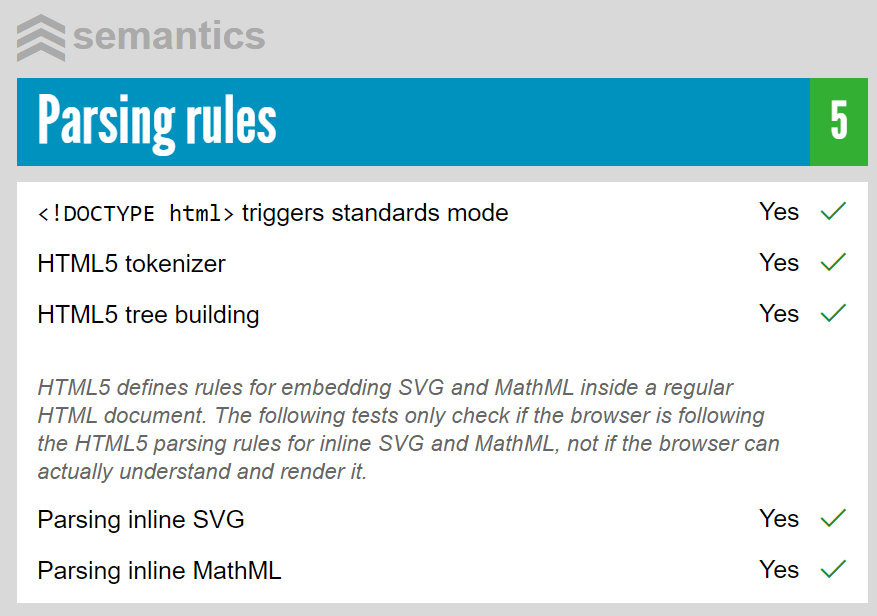

HTML5 is the newest generation of the HTML (Hypertext Markup Language) standard, which is used to define the appearance and behavior of web pages. HTML5 is sometimes used as an umbrella term to refer to three technologies:
HTML, which provides the structure of a webpage document
CSS, which uses the structure defined in HTML to facilitate webpage presentation
JavaScript, which is used to add behavior and events to the document
This is because while HTML provides an easy-to-understand way to represent documents and content, JavaScript and CSS share the equally important roles of adding functionality and memorability to web pages. In the information age, this is crucial, as developers must provide engaging content to captivate their readers and grow their brand.
HTML5 in particular has changed the world of web development and design miraculously, as the release of this standard in 2014 signified a monumentous paradigm shift for the intended use of the web.
While previously, HTML was a standard provided to allow developers to put documents on the web, the introduction of its fifth generation made the web the perfect home for distributed applications. The reasons for this paradigm shift include HTML5s increased simplicity to develop with (compared to its predecessor), its fluid maintainability, and the increased flexibility that allows developers to provide device-independent apps that can do more with relative ease.
An example Canvas demonstrating gradient generation.
HTML5 has a plethora of features that prove advantageous for a wide range of use cases, many of which mark it as the state-of-the-art platform for app development. On a high level, these include:
Multimedia support: Previously, in order to support audio/video media on the web, developers had to use an external plugin such as Adobe Flash or Microsoft Silverlight. This meant developers were reliant on the jurisdiction of the companies providing these plugins, and it was not up to them to add certain features if they felt it necessay. HTML5 obliterated this dependency, and now has provided native media support...
Video/Audio: Native, in-browser support for MP4/OGG/WebM videos, and M4A/OGG/WebM/MP3 and WAV audio. Which of these formats is viewable by a user is determined by their browser's codecs and support (Footnote:
Tom Green, Silvia Pfeiffer. Beginning HTML5 Media: Make the Most of the New Video and Audio Standards for the Web. (2015) 2-5.).
SVG: (Footnote:
Scalable Vector Graphics
)
SVG is a XML-defined vector graphic format. Unlike canvas, it produces potentially-complex scalable graphics that maintain their quality at the expense of longer generation time. SVG images are also not saveable through the browser.

https://html5test.com/ allows one to check their browsers support for HTML5 features.
Offline website functionality: Websites can be designed in such a way that implementation can be stored on the user's machine, allowing them to access the site afterwards regardless of whether or not they are connected to the net.
Device independent implementation: Unlike plugins such as Flash and Silverlight, HTML5 is device-independent, meaning apps produced to fit this standard can run on any device that supports it. This brings a wealth of practical advantages to society, bridging the digital divide with the ubiquity of web browsers. It allows anyone with access to the web to access resources such as telemedicine and telelearning.
Backwards compatibility (Fallbacks): Perhaps the most versatile thing about HTML5 is its support for fallbacks. When a website is loaded by a browser that does not yet support HTML5, a developer-defined fallback can step up to provide users with the same information, encoded in a different way to be displayable by older browsers.
Libraries (Footnote:
Stewart C. Baker (2014) Making It Work for Everyone: HTML5 and CSS Level 3 for Responsive, Accessible Design on Your Library's Web Site, Journal of Library & Information Services in Distance Learning, 8:3-4, 118-136, DOI: 10.1080/1533290X.2014.945825)
Aside from these major sectors, another sector being revolutionized by HTML5 is the Smart Tourism industry.
Although "smart" is a bit of a buzzword, Smart Tourism is a very real thing that many countries are vying to achieve, as they recognize its potential for being sustainable and lucrative at the same time. It can be defined as: "A destination facilitating access to tourism and hospitality products, services, spaces and experiences through ICT-based tools. It is a healthy social and cultural environment, which can be found through a focus on the city´s social and human capital. It also implements innovative, intelligent solutions and fosters the development of entrepreneurial businesses and their interconnectedness."
(Footnote: The European Capital of Smart Tourism (2019))
In other words, Smart Tourism is when a city offers solutions that make the city more accessible, preserves its environment and culture, and gives tourists the opportunity to partake in the content made available to them when they visit.
Although not many sources exist that specifically document the usability of HTML5 in this industry, a number of the features mentioned in the previous session prove useful. One of the major driving forces allowing HTML to be so useful is the recent increase in internet accessibility -- especially in Europe, where most of these Smart Cities can be located (for example, the noteworthy Gothenburg, Sweden).
(Footnote: Smart tourism explained: What, why and where)
Cities like these can provide city-wide wi-fi that gives tourists access to the web. Using this accessibility, tourists can plan their journeys in detail and use the resources made available to them to manouvre the city.
The city of Malaga, Spain has implemented the use of HTML to create a website that alerts users to coronavirus activity within the city, allowing potential tourists to plan their visits accordingly.
Another important factor of HTML5 that aides cities in providing these "Smart Tourism" experiences is accessibility. This release prioritizes it, and developers now find it easier than ever to release websites that are useable regardless of the users device, language, browser, internet connectivity, location or their physical or mental ability.
The A11Y Project asserts that website accessibility can be broken down into the pursuit of 4 major goals (POUR):
Perceivable: Users must be able to perceive it in some way, using one or more of their senses.
Operable: Users must be able to control UI elements (e.g. buttons must be clickable in some way — mouse, keyboard, voice command, etc.).
Understandable: The content must be understandable to its users.
Robust: The content must be developed using well-adopted web standards that will work across different browsers, now and in the future.
The newly-introduced semantic elements of HTML5 make this a simpler process, allowing for things like screen readers to lay out a websites structure by looking for key tags such as "nav" or "article".
(Footnote:
Hogan, Brian P. HTML5 and CSS3: Develop With Tomorrows Standards Today. (2011)
)
In the context of smart tourism, this is incredibly helpful. Formatting websites to be accessible ensures that tourists can find their way around cities regardless of disability, and encourages them to come visit as it shows the city are concerned with all potential visitors, not just those that are typically-abled.
Footnotes:
So, where is HTML5 going next? There are several theories.